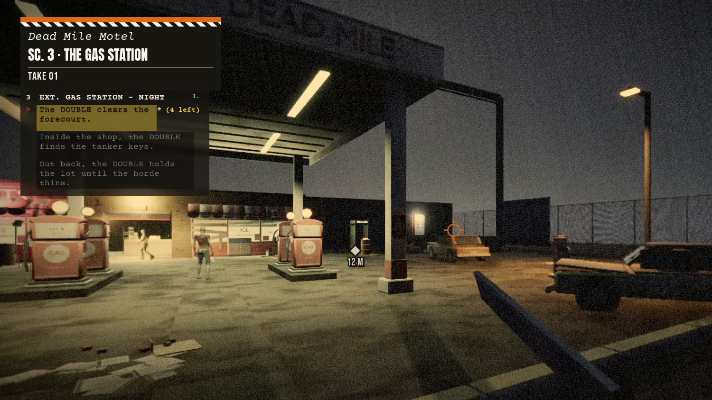
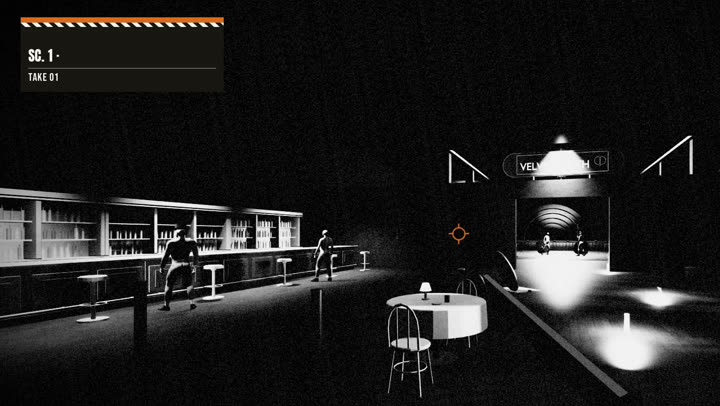
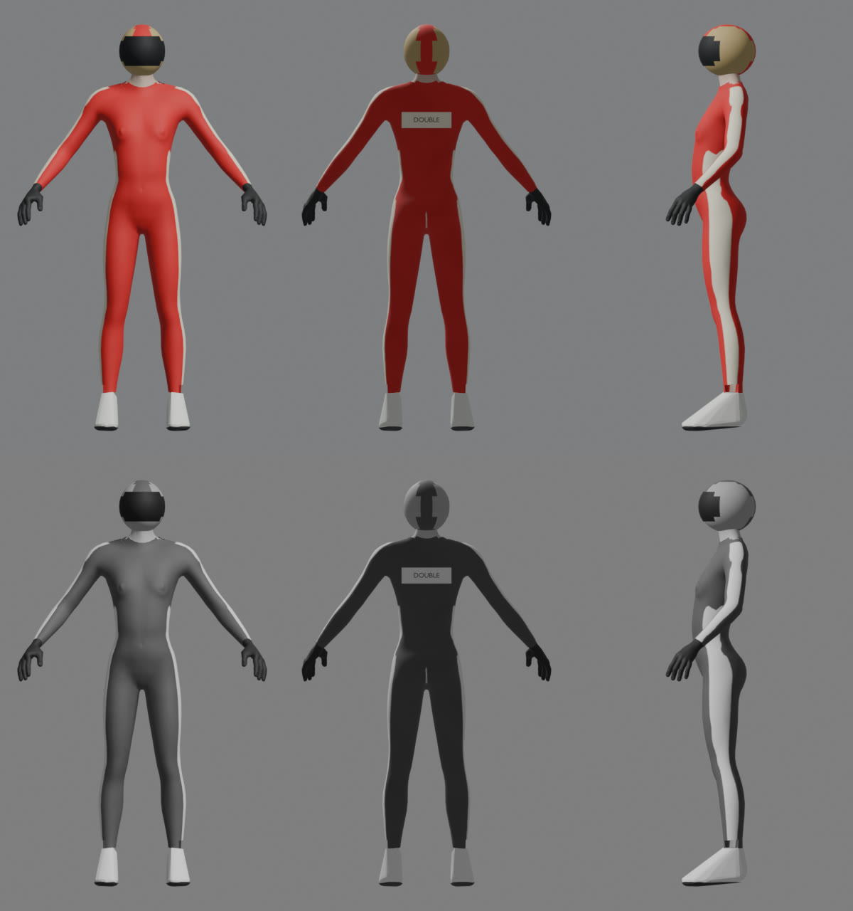
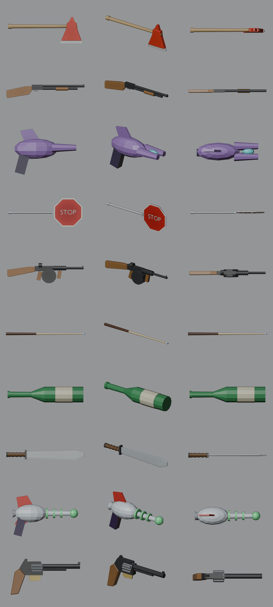

An art pass without downloading a texture
At 11:26 I put "art passes, possibly new art" on the plan. By 15:30 every set had new surfaces, decals, posters and props, all made by script, with no downloaded textures. The stunt double finally has a helmet that reads on film.
Day 2, Fri 13 NovHour 35
After the first playtest on Thursday I said the art "doesn't obviously need a big art pass". By lunchtime the core worked, so I changed my mind. At 11:26 the Director logged my words: "art pass also means possibly new art". Five sessions took a piece of it.
Surfaces from code
The World session's rule for itself, written into its task log: "No textures: procedural HLSL only (no licensing/credits, rerunnable)." Every surface is a material made of maths: plywood, concrete, tarmac, canvas flats. The oil stains, cracks and tyre skids are 31 procedural decals placed by a kit.

Posters from Blender
The posters needed pictures, so the World session drove Blender with no window open, rendered twelve of them to image files, and closed it again. The brands are invented, because the jam rules don't allow anyone else's: Fizz-O Cola, Brasscap motor oil, a "Missing" flyer, and a poster for each of the game's own films.

Noir 01, the jazz club. Tables, bar and stage in black and white. Zombie 02, the motel, with its sign and set dressing.
Zombie 02, the motel, with its sign and set dressing. UFO 02 in the film's Technicolor look: a picket fence, lamps and a green glow on the lawn.
UFO 02 in the film's Technicolor look: a picket fence, lamps and a green glow on the lawn.


The second World session did the same for props: shop fronts, a bandshell, finned cars, a police car, a crashed saucer, a camera dolly and lighting truss, each built in Blender by script and previewed from front and back before it went in.
The double and the weapons

The NPC session builds every body from MakeHuman, an open-source human model, through a Blender plugin, all scripted. Its fix this afternoon was the helmet. On the 12:30 reel it read as a bald white head. The colours were working. The cream was simply too bright for the film look, so it went buff, with a wider stripe.

Still to do
The finale is too dark to show yet. The UFO 01 posters went on the walls sideways. The barrel that should explode didn't. Most of these are booked for the 17:30 block.